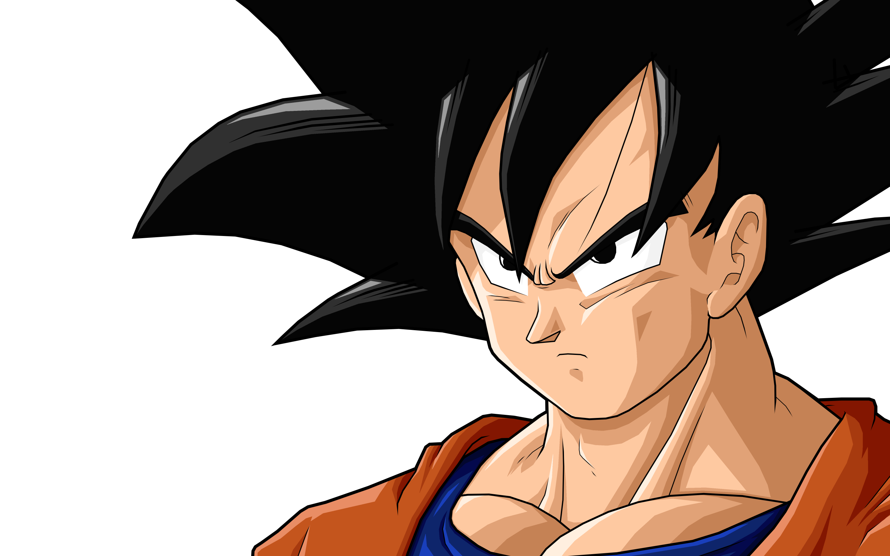
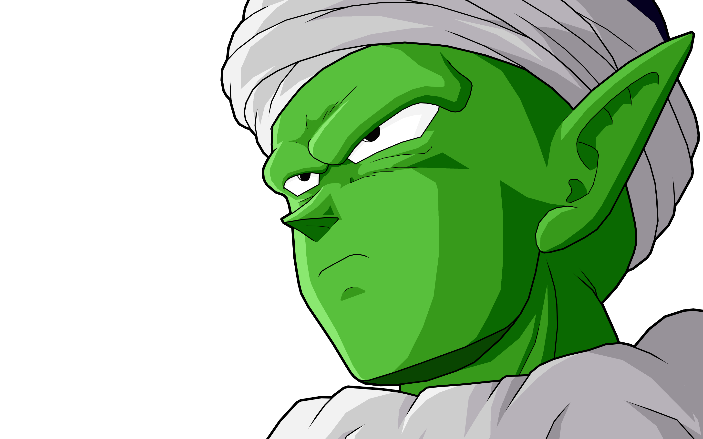
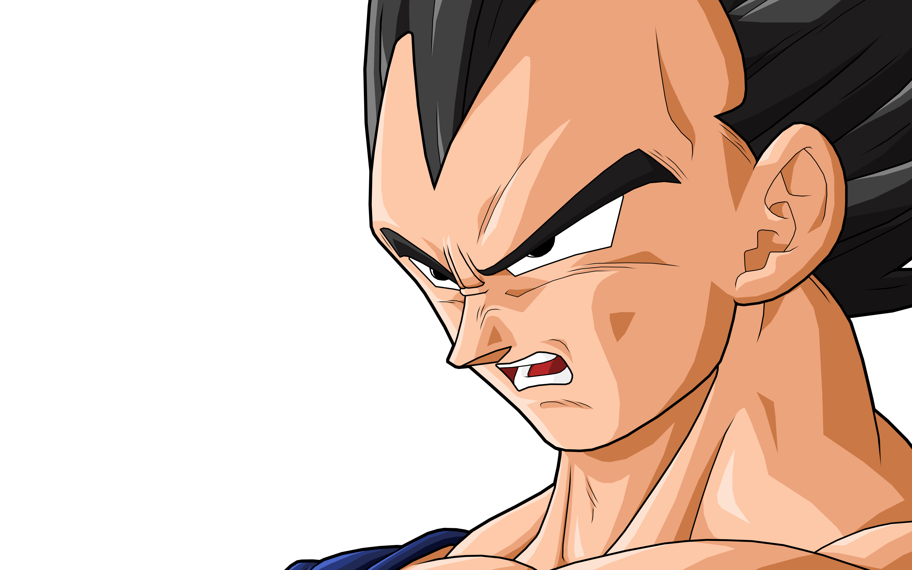

Goku: 
Es uno de los pocos saiyanos que lograron sobrevivir a la destrucción total del Planeta Vegeta del Universo 7. Es el segundo hijo de Bardock y Gine, hermano menor de Raditz, nieto adoptivo de Son Gohan, esposo de Chi-Chi, padre de Son Gohan y Son Goten, a su vez también es el abuelo de Pan y ancestro de Son Goku Jr.Originalmente enviado a la Tierra como un infante volador con la misión de conquistarla. Sin embargo, el caer por un barranco le proporcionó un brutal golpe que si bien casi lo mata,este alteró su memoria y anuló todos los instintos violentos de su especie, lo que lo hizo crecer con un corazón puro y bondadoso, pero conservando todos los poderes de su raza. No ostante, en la nueva continuidad de Dragon Ball se establece que él fue enviado por sus padres a la Tierra con el objetivo de sobrevivir a toda costa a la destrucción de su planeta por parte de Freeza. Más tarde, Kakarot, ahora conocido como Son Goku, se convertiría en el príncipe consorte del monte Fry-pan y líder de los Guerreros Z, así como el mayor defensor de la Tierra y del Universo 7, logrando mantenerlos a salvo de la destrucción en innumerables ocasiones, a pesar de no considerarse a sí mismo como un héroe o salvador.
Piccolo: 
Es uno de los personajes principales que aparece en el manga y anime de Dragon Ball y sus correspondientes secuelas. Es un namekiano que surgió tras ser creado en los últimos momentos de vida de su padre, siendo su actual reencarnación. Aunque en un principio fue el archienemigo de Son Goku, con el paso del tiempo fue haciéndose menos malvado hasta finalmente convertirse en un ser bondadoso y miembro de los Guerreros Z. A través del tiempo, también comenzó a tomarle cariño a su discípulo Son Gohan, a quien veía como una especie de "vástago" y formando un lazo de amistad con este.
Vegeta: 
Es el hijo mayor del rey Vegeta III, así como el príncipe más reciente de la familia real saiyana y uno de los pocos supervivientes tras el genocidio saiyano del planeta Vegeta del Universo 7, a manos de Freeza. Es el eterno rival de Son Goku, hermano mayor de Tarble, el esposo de Bulma, padre de Trunks y Bra y ancestro de Vegeta Jr.A pesar de que a inicios de Dragon Ball Z, Vegeta cumple un papel antagónico, poco después decide rebelarse ante el Imperio de Freeza, volviéndose un aliado clave para los Guerreros Z. Con el paso del tiempo llegaría a cambiar su manera de ser, optando por permanecer y vivir en la Tierra para luchar a su lado contra las inminentes adversidades que superar. Junto con Piccolo, él es de los antiguos enemigos de Goku que ha evolucionando al pasar de ser un villano y antihéroe, a finalmente un héroe a lo largo del transcurso de la historia, convirtiéndose así en el deuteragonista de la serie.